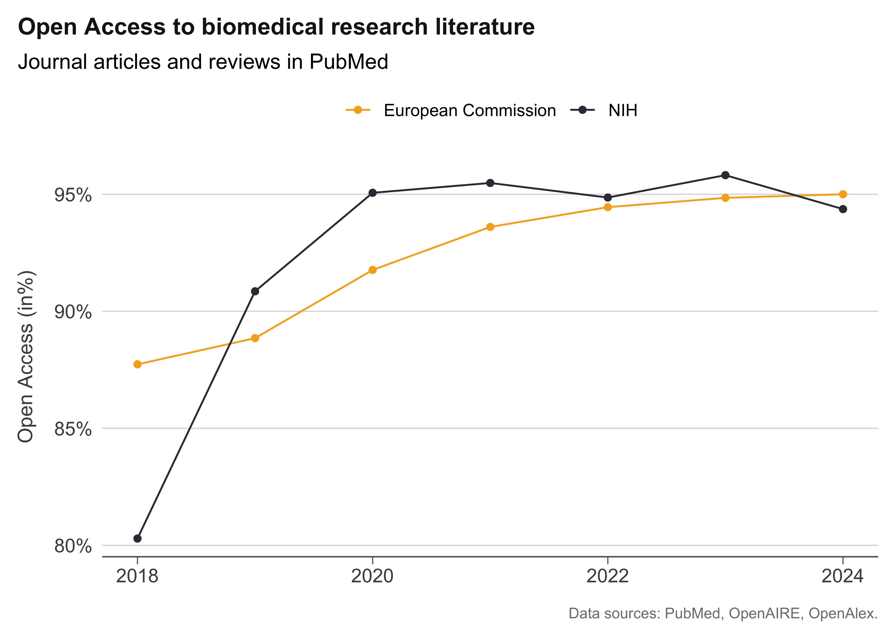
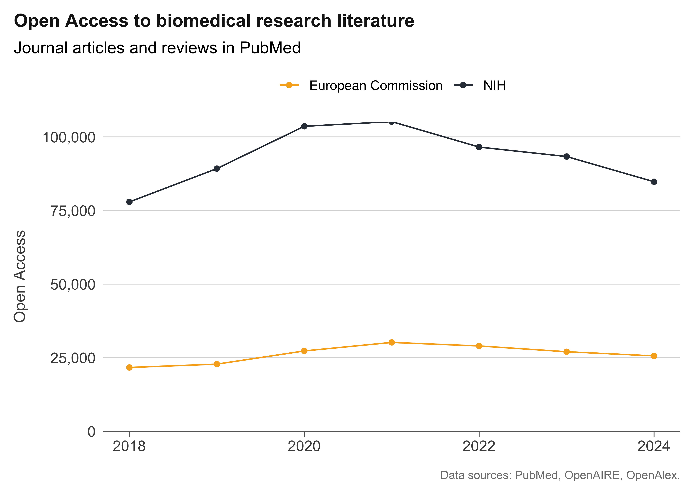
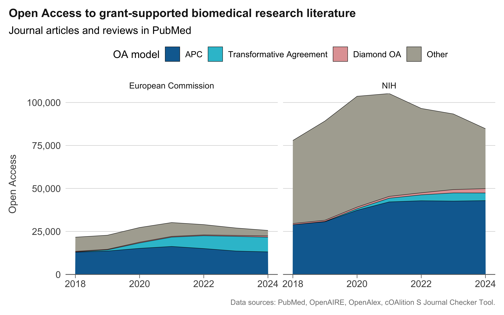

library(tidyverse)
library(bigrquery)
library(DBI)
library(countrycode)
# Connect to GBQ with billing project from SUB Göttingen,
# You have to use your own :-)
bq_con <- dbConnect(
bigrquery::bigquery(),
project = "subugoe-collaborative",
dataset = "openalex",
billing = "subugoe-collaborative"
)Crosswalking ORION resources to measure open access to biomedical research literature
tutorial
open access
funder info
Najko Jahn ![]()
Bianca Kramer
Cameron Neylon
Nick Haupka
Abstract
This tutorial demonstrates how to crosswalk various ORION resources. The focus is on funder and open access information for biomedical journal literature. Using the National Institutes of Health (NIH) and the European Commission (EC) as examples, the tutorial shows how to combine several data sources on BigQuery, including Crossref, OpenAIRE, OpenAlex, and open access agreement data from cOAlition S. The analysis covers more than 800,000 articles in PubMed, revealing notable differences in open access uptake between NIH- and EC-supported biomedical research.
Introduction
This notebook shows how several open research information resources provided by the ORION community on Google BigQuery can be used to measure open access by funder over time. We use a comparison of NIH- and European Commission-supported biomedical research literature to illustrate the approach. Transformative agreements have played an important role in Europe for several years, and recent discussions around the NIH open access policy and price caps for publication fees raise the question about the role of similar agreements in the US.
Overview of data sources
Using this policy debate as a starting point, this notebook combines the following sources into a unified dataset on open access in biomedical research literature, with a particular focus on publisher-provided open access through transformative agreements.
Identifying grant-supported biomedical literature
- PubMed: Our starting point, which is used to retrieve NIH grant-supported publications and as a standard source for biomedical literature. PubMed is not available through one of ORION’s data offerings, so data are retrieved via the Entrez API. PubMed identifiers (PMIDs) serve as the linking key for biomedical research records. ::: {.column-margin} The script used can be found here. :::
- OpenAIRE: The OpenAIRE graph, provided by Sesame Open Science, is used to identify publications supported by the European Commission. OpenAIRE also contains PMIDs for PubMed-indexed articles, which allows filtering of to biomedical literature and linking to the other sources.
Publication metadata
- OpenAlex: The primary source for bibliographic metadata in this tutorial. OpenAlex records also include PMIDs as identifiers. Here, we will use the SUB Göttingen OpenAlex offering.
- Crossref: As provided by SUB Göttingen. Useful for publisher disambiguation, because Crossref provides more consistent publisher names than OpenAlex.
- Document classification: A document classification dataset, developed as part of the German Competence Network for Bibliometrics and provided by SUB Göttingen, is used to restrict the sample to original research articles.
Open access information
- OpenAlex: Provides article- and journal-level open access status.
- cOAlition S Journal Checker Tool data: Contains institution- and journal-level data crowd-sourced from library consortia. SUB Göttingen consolidates this information and links articles to agreements. This tutorial shows how that matching can be carried out in Google BigQuery.
Data gathering steps
Setup
As a notebook software, we use Quarto. Acutally, the ORION website is also build with Quarto.
To query BigQuery from within our Quarto notebook, we use the R bigrquery package via the DBI interface. The connection is established as follows:
We also define a custom plot theme, inspired by the style used by Our World in Data.
my_theme <- function(base_size = 12) {
theme_minimal(base_size = base_size) +
theme(
panel.grid.major.x = element_blank(),
panel.grid.minor.x = element_blank(),
panel.grid.minor.y = element_blank(),
panel.grid.major.y = element_line(color = "grey85", linewidth = 0.3),
axis.line.x = element_line(color = "grey40", linewidth = 0.4),
axis.ticks.x = element_line(color = "grey40", linewidth = 0.3),
axis.ticks.length.x = unit(0.15, "cm"),
axis.ticks.y = element_blank(),
axis.text = element_text(color = "grey30", size = rel(0.9)),
axis.title.y = element_text(color = "grey30", size = rel(0.95), margin = margin(r = 10)),
plot.title = element_text(face = "bold", size = rel(1.1), color = "grey10", margin = margin(b = 8)),
plot.title.position = "plot",
plot.caption = element_text(hjust = 1, size = rel(0.7), color = "grey50", margin = margin(t = 12)),
plot.caption.position = "plot",
legend.position = "top",
plot.margin = margin(10, 10, 10, 10)
)
}Create a publication metadata set
This section describes how we assembled the analytical dataset, combining grant funding information from PubMed and OpenAIRE with publication metadata from OpenAlex and Crossref.
It is generally good practice to begin by creating a focused subset of publications that contains only the columns needed for your analysis. This reduces query costs, keeps the working dataset to a manageable size, and keeps a local subset of the raw metadata save.
Our first step is to build a publication dataset enriched with grant funding information from the NIH and the European Commission. Because PubMed is not yet part of ORION, NIH funding data are retrieved directly from PubMed via the Entrez API.
The result is a list of PMIDs representing NIH-supported publications, which we then upload to BigQuery.
pmids_nih <- read_lines("nih_pmids_2018_2024.txt")
dbWriteTable(bq_con, # Our BQ connections
"subugoe-collaborative.resources.nih_pmids_2018_2024", # Table name
tibble::tibble(pmids_nih = pmids_nih), # PMIDs in rectangular format with column name
overwrite = TRUE
)In total, PubMed indexed 824060 publications with NIH support between 2018 and 2024.
Next, we combine this list with OpenAIRE, the most comprehensive source for EC-funded publications, to add European Commission-supported biomedical literature, and with OpenAlex and Crossref to obtain full publication metadata.
The resulting table is stored as subugoe-collaborative.resources.oa_tutorial_md_raw, and is publicly accessible. You will need to substitute your own dataset name.
CREATE OR REPLACE TABLE `subugoe-collaborative.resources.oa_tutorial_md_raw` AS (
WITH openaire_funders AS (
SELECT DISTINCT
pid.value AS pmid,
fund.name AS funder
FROM `sos-datasources.openaire.project_20260129` AS proj,
UNNEST(fundings) AS fund
INNER JOIN `sos-datasources.openaire.relation_product_project_20260129` AS pub_proj
ON proj.id = pub_proj.target
INNER JOIN `sos-datasources.openaire.publication_20260129` AS pub
ON pub_proj.source = pub.id,
UNNEST(pub.pids) AS pid
WHERE fund.name IN ('European Commission')
AND pid.scheme = 'pmid'
),
nih_funders AS (
SELECT DISTINCT
CAST(pmids_nih AS STRING) AS pmid
FROM `subugoe-collaborative.resources.nih_pmids_2018_2024`
),
all_funders AS (
SELECT pmid, 'European Commission' AS funder
FROM openaire_funders
UNION ALL
SELECT pmid, 'NIH' AS funder
FROM nih_funders
)
SELECT DISTINCT
oalex.id,
oalex.doi,
oalex.ids.pmid,
oalex.ids.pmcid,
publication_year,
publication_date,
primary_location.source.issn_l AS issn_l,
oalex.primary_location.source.host_organization_name AS oalex_publisher,
cr.publisher AS cr_publisher,
primary_location.source.is_in_doaj AS is_in_doaj,
open_access.oa_status AS oa_status,
country AS country_code,
inst.ror,
af.funder AS funders
FROM `subugoe-collaborative.openalex_walden.works` AS oalex
LEFT JOIN
UNNEST(authorships) AS au WITH OFFSET AS pos
LEFT JOIN
UNNEST(au.countries) AS country
LEFT JOIN
UNNEST(au.institutions) AS inst
LEFT JOIN `subugoe-collaborative.resources.document_classification_september25` AS doctype_classifier
ON oalex.doi = doctype_classifier.doi
INNER JOIN `subugoe-collaborative.cr_instant.snapshot` AS cr
ON LOWER(oalex.doi) = LOWER(cr.doi)
LEFT JOIN all_funders AS af
ON REGEXP_EXTRACT(oalex.ids.pmid, r'(\d+)$') = af.pmid
WHERE
pos = 0
AND primary_location.source.type = "journal"
AND is_paratext = FALSE
AND oalex.type IN ('article','review')
AND is_research IS NOT FALSE
AND is_xpac = FALSE
AND (
NOT REGEXP_CONTAINS(oalex.biblio.issue, '^[a-zA-Z]')
OR oalex.biblio.issue IS NULL)
AND (
NOT REGEXP_CONTAINS(oalex.title, '[0-9]{3} pp.'))
AND publication_year BETWEEN 2018 AND 2025
)The query uses Common Table Expressions (CTEs), introduced with WITH, to build up the dataset in stages. The first CTE, openaire_funders, extracts EC-funded publications from OpenAIRE by unnesting the fundings array, filtering for the European Commission, and joining to the OpenAIRE publication and relation tables to retrieve the associated PMIDs. The second CTE, nih_funders, reads the PMID list we uploaded in the previous step. Both are combined in all_funders using UNION ALL.
The main query retrieves metadata for all journal articles in the OpenAlex snapshot and joins the funder information. Several filters are applied to keep the dataset focused on relevant publications: only journal articles and reviews are included; first author affiliations are used (identified via WITH OFFSET because the author position field was not available in this snapshot); and a set of pattern-based exclusions removes conference proceedings and other non-standard records. Crossref is used as the source for publisher names, as it provides more consistent disambiguation than OpenAlex, which can split the same publisher across multiple imprints. The dataset covers publications from 2018 to 2025.
Estimate articles covered by transformative agreements
Next, we estimate how many open access articles were enabled by a transformative agreement, following the method described by Jahn (2025). Because of a lack of open access invoicing data, ususally not shared by libraries and publishers, various metadata sources ar ematched to obtain an estiamtion. Such an appraoch has been proven to provide robust results, but will likely underestimate the overall number of articles enabled by an angreements.
The query draws on several datasets from the Journal Checker Tool, provided by SUB Göttingen as part of the open bibliometric data offerings from the German Competence Network for Bibliometrics.
CREATE OR REPLACE TABLE `subugoe-collaborative.resources.oa_tutorial_jct_articles` AS (
WITH
-- Enrich ROR variants from associated institutions
obtain_associated_ror_ids AS (
SELECT
esac_id,
jct_inst.ror_id AS ror_jct,
inst.ror AS ror_associated
FROM
`subugoe-collaborative.openbib.jct_institutions` AS jct_inst
LEFT JOIN
`subugoe-collaborative.openalex.institutions` AS oalex_inst
ON
jct_inst.ror_id = oalex_inst.ror
LEFT JOIN
UNNEST(oalex_inst.associated_institutions) AS inst
),
create_matching_table AS (
SELECT esac_id, 'ror_jct' AS ror_type, ror_jct AS ror
FROM obtain_associated_ror_ids
UNION ALL
SELECT esac_id, 'ror_associated' AS ror_type, ror_associated AS ror
FROM obtain_associated_ror_ids
),
enriched_ror_variants AS (
SELECT DISTINCT
create_matching_table.*,
DATE(jct_inst.start_date) AS start_date,
DATE(jct_inst.end_date) AS end_date
FROM create_matching_table
INNER JOIN `subugoe-collaborative.openbib.jct_esac` AS jct_inst
ON create_matching_table.esac_id = jct_inst.id
),
journal_agreements AS (
SELECT
j.issn_l,
e.id AS esac_id
FROM `subugoe-collaborative.openbib.jct_journals` AS j
INNER JOIN `subugoe-collaborative.openbib.jct_esac` AS e
ON j.esac_id = e.id
)
SELECT DISTINCT
md.id,
md.doi,
md.issn_l AS matching_issn_l,
md.ror AS matching_ror,
erv.ror_type,
erv.esac_id,
erv.start_date,
erv.end_date,
md.publication_date
FROM `subugoe-collaborative.resources.oa_tutorial_md_raw` AS md
INNER JOIN journal_agreements AS ja
ON md.issn_l = ja.issn_l
INNER JOIN enriched_ror_variants AS erv
ON md.ror = erv.ror
AND ja.esac_id = erv.esac_id
WHERE
md.ror IS NOT NULL
AND md.issn_l IS NOT NULL
AND (PARSE_DATE('%Y-%m-%d', md.publication_date) >= erv.start_date OR erv.start_date IS NULL)
AND (PARSE_DATE('%Y-%m-%d', md.publication_date) <= erv.end_date OR erv.end_date IS NULL)
-- Only TA OA articles
AND oa_status IN ('gold', 'hybrid')
ORDER BY erv.esac_id, md.publication_date
)With these two datasets in place, we are ready to proceed with the funder-specific open access analysis.
Create the analytical dataset: funder view
The following query combines the publication metadata table with the transformative agreement articles table to count articles by funder, publication year, and open access type. It also calculates the total number of articles per funder and year, which serves as the denominator for open access proportions.
The analysis focuses on articles made freely available on the journal website, covering gold open access in DOAJ-listed journals, hybrid open access, and diamond open access. Repository-based open access, such as deposits in PubMed Central, is not distinguished further and is grouped into the “Other” category. The same accounts for bronze, many biomedical journals make back issues openly available after an embargo period to comply with NIH open access policies prior 2025, which OpenAlex tags as bronze.
WITH
oa AS (
SELECT
publication_year,
funders,
CASE
WHEN (is_in_doaj = TRUE AND oa_status = 'gold') THEN 'gold_is_in_doaj'
WHEN (is_in_doaj = TRUE AND oa_status = 'diamond')
THEN 'diamond_is_in_doaj'
WHEN oa_status = 'hybrid' THEN 'hybrid_oa'
WHEN oa_status != 'closed' THEN 'other_oa'
END AS oa_type,
CASE
WHEN jct.doi IS NOT NULL THEN TRUE
ELSE FALSE
END AS enabled_ta,
COUNT(DISTINCT md.pmid) AS n_oa_articles
FROM `subugoe-collaborative.resources.oa_tutorial_md_raw` AS md
LEFT JOIN
(
SELECT DISTINCT doi
FROM `subugoe-closed.apc_science.jct_articles`
) AS jct
USING (doi)
WHERE funders IS NOT NULL
GROUP BY
publication_year,
funders,
oa_type,
enabled_ta
),
total AS (
SELECT
publication_year,
funders,
COUNT(DISTINCT pmid) AS articles
FROM `subugoe-collaborative.resources.oa_tutorial_md_raw`
GROUP BY
publication_year,
funders
)
SELECT
total.publication_year,
total.funders,
total.articles,
oa.n_oa_articles,
oa.oa_type,
oa.enabled_ta
FROM total
LEFT JOIN oa
ON
total.publication_year = oa.publication_year
AND total.funders = oa.funders
WHERE total.funders IS NOT NULL AND total.publication_year < 2025
ORDER BY total.publication_year DESCThe query result is stored in an R object called funding_oa for further local analysis.
funding_oa# A tibble: 108 × 6
publication_year funders articles n_oa_articles oa_type enabled_ta
<int> <chr> <int> <int> <chr> <lgl>
1 2024 NIH 89834 34745 other_… FALSE
2 2024 NIH 89834 5062 <NA> FALSE
3 2024 NIH 89834 2500 diamon… FALSE
4 2024 NIH 89834 30187 gold_i… FALSE
5 2024 NIH 89834 1218 gold_i… TRUE
6 2024 NIH 89834 3241 hybrid… TRUE
7 2024 NIH 89834 12750 hybrid… FALSE
8 2024 NIH 89834 131 other_… TRUE
9 2024 European Commissi… 26958 3102 other_… FALSE
10 2024 European Commissi… 26958 1348 <NA> FALSE
# ℹ 98 more rowsoa_by_year <- funding_oa |>
filter(!is.na(oa_type)) |>
summarise(n_oa = sum(n_oa_articles),
.by = c(publication_year, funders, articles)
) |>
mutate(oa_prop = n_oa / articles)The following figure illustrates the relative growth of open access, comparing biomedical research articles acknowledging support from the European Commission and the NIH. It is evident that both funders have similar open access shares of over 90%.
oa_by_year |>
ggplot(aes(publication_year, oa_prop, group = funders, color = funders)) +
geom_line() +
geom_point() +
scale_y_continuous("Open Access (in%)", labels = scales::percent_format()) +
scale_color_manual(NULL,
values = c(
"NIH" = "#323a45",
"European Commission" = "#F8AE21"
)) +
labs(x = NULL,
title = "Open Access to biomedical research literature",
subtitle = "Journal articles and reviews in PubMed",
caption = "Data sources: PubMed, OpenAIRE, OpenAlex.") +
my_theme()
The next figure shows the absolute development.
oa_by_year |>
ggplot(aes(publication_year, n_oa, group = funders, color = funders)) +
geom_line() +
geom_point() +
scale_y_continuous("Open Access", labels = scales::label_number(big.mark = ","), limits = c(0, NA), expand = c(0, 0)) +
scale_color_manual(NULL,
values = c(
"NIH" = "#323a45",
"European Commission" = "#F8AE21"
)) +
labs(x = NULL,
title = "Open Access to biomedical research literature",
subtitle = "Journal articles and reviews in PubMed",
caption = "Data sources: PubMed, OpenAIRE, OpenAlex.") +
my_theme()
Next, we break down open access by business model. Four categories are distinguished using a combination of OpenAlex data and estimates derived from the Coalition S Transformative Agreement data:
- APC: gold or hybrid open access, not via a transformative agreement
- Transformative Agreement: gold or hybrid open access enabled by a transformative agreement
- Diamond OA: diamond open access (no article processing charge)
- Other: all remaining open access routes (e.g. via PubMed Central)
Note that the focus is on publisher open access business models, and OpenAlex open access status definition favors publisher-provided open access, so articles in PMC repositories are accounted when there was no open version on a publisher website.
oa_by_year_and_type <- funding_oa |>
filter(!is.na(oa_type)) |>
mutate(oa_cat = case_when(
oa_type %in% c("gold_is_in_doaj", "hybrid_oa") & enabled_ta == FALSE ~ "APC",
oa_type %in% c("gold_is_in_doaj", "hybrid_oa") & enabled_ta == TRUE ~ "Transformative Agreement",
oa_type == "diamond_is_in_doaj" ~ "Diamond OA",
.default = "Other")
) |> summarise(n_oa = sum(n_oa_articles),
.by = c(publication_year, funders, articles, oa_cat)
) |>
mutate(oa_prop = n_oa / articles,
oa_cat = factor(oa_cat, levels = c("APC", "Transformative Agreement", "Diamond OA", "Other")))oa_by_year_and_type# A tibble: 56 × 6
publication_year funders articles oa_cat n_oa oa_prop
<int> <chr> <int> <fct> <int> <dbl>
1 2024 NIH 89834 Other 34876 0.388
2 2024 NIH 89834 Diamond OA 2500 0.0278
3 2024 NIH 89834 APC 42937 0.478
4 2024 NIH 89834 Transformative A… 4459 0.0496
5 2024 European Commission 26958 Other 3199 0.119
6 2024 European Commission 26958 Diamond OA 740 0.0275
7 2024 European Commission 26958 Transformative A… 8548 0.317
8 2024 European Commission 26958 APC 13123 0.487
9 2023 NIH 97415 Other 43969 0.451
10 2023 NIH 97415 Diamond OA 1948 0.0200
# ℹ 46 more rowsThe following two plots show the same breakdown as proportions and as absolute counts, respectively.
oa_by_year_and_type |>
ggplot(aes(publication_year, oa_prop, fill = fct_rev(oa_cat))) +
geom_area(color = "black", linewidth = 0.2) +
facet_wrap(~funders) +
scale_y_continuous("Open Access (in%)", labels = scales::percent_format(), limits = c(0, 1),
expand = c(0, 0)) +
scale_fill_manual("OA model",
values = c(
"APC" = "#0E6BA0",
"Transformative Agreement" = "#30C0D2",
"Diamond OA" = "#E2A3A4",
"Other" = "#AEACA0"
)) +
labs(x = NULL,
title = "Open Access to grant-supported biomedical research literature",
subtitle = "Journal articles and reviews in PubMed",
caption = "Data sources: PubMed, OpenAIRE, OpenAlex, cOAlition S Journal Checker Tool.") +
my_theme() +
guides(fill = guide_legend(reverse = TRUE))
oa_by_year_and_type |>
ggplot(aes(publication_year, n_oa, fill = fct_rev(oa_cat))) +
geom_area(color = "black", linewidth = 0.2) +
facet_wrap(~funders) +
scale_y_continuous("Open Access", labels = scales::label_number(big.mark = ","),
limits = c(0, NA), expand = c(0, 0)) +
scale_fill_manual("OA model",
values = c(
"APC" = "#0E6BA0",
"Transformative Agreement" = "#30C0D2",
"Diamond OA" = "#E2A3A4",
"Other" = "#AEACA0"
)) +
labs(x = NULL,
title = "Open Access to grant-supported biomedical research literature",
subtitle = "Journal articles and reviews in PubMed",
caption = "Data sources: PubMed, OpenAIRE, OpenAlex, cOAlition S Journal Checker Tool.") +
my_theme() +
guides(fill = guide_legend(reverse = TRUE))
The figures highlight differences in how open access is financed across the two funder communities. In 2024, 94.4% of NIH-supported biomedical research articles were open access (84772 out of 89834 original research articles and reviews indexed in both PubMed and OpenAlex). Of those open access articles, 50.6% were enabled through individual article processing charges (APCs), while only 5.3% were covered by transformative agreements. The remaining 41.1% were made available through other routes, primarily via PubMed Central.
The picture is different for European Commission-funded research. In 2024, 95% of supported biomedical research articles were open access (25610 out of 26958). Of those, 33.4% were covered by transformative agreements, a substantially higher share than for NIH-funded research. This reflectsthe wider adoption of such institutional deals in Europe. A further 51.2% were enabled through APCs, and 12.5% through other routes.
The comparison suggests that agreements between library consortia and publishers play an important role in making European Commission-funded publications available in Europe, raising important questions about who pays for complying with the funder’s open access policy. The NIH in the US did achieve a similar overall open access share, but through a different route: a much larger proportion of articles is exclusively in the “Other” category, likely representing articles deposited in PubMed Central or made freely available on the publisher’s website after an embargo period to comply with previous NIH mandates.